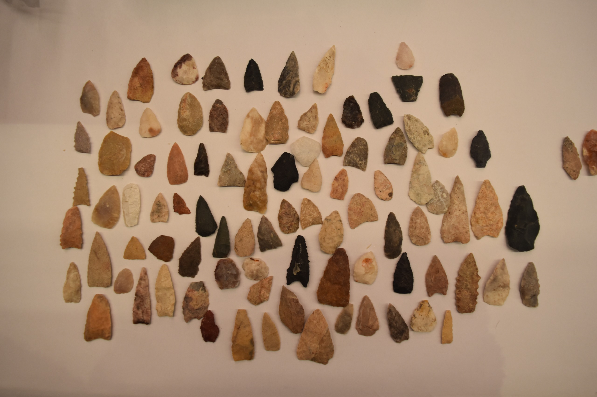
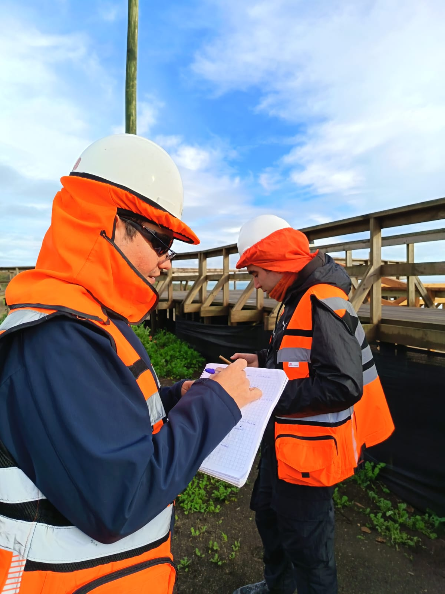
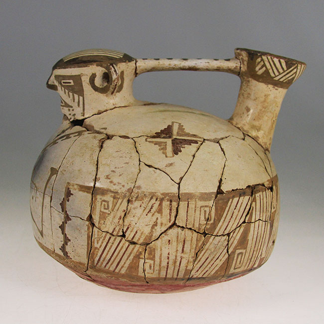

Cuatro ideas que explican por qué hacemos lo que hacemos, y cómo lo hacemos.

Creemos que el patrimonio no comienza cuando un objeto entra a un museo. Comienza cuando una comunidad reconoce en él parte de su historia.
En Pieza Viva entendemos que cada paisaje, cada objeto, cada sitio arqueológico y cada registro conservan fragmentos de la memoria de quienes habitaron este territorio antes que nosotros.
Nuestro trabajo consiste en descubrir esas historias, documentarlas con rigor científico y transformarlas en conocimiento accesible para las personas.
No solo investigamos el patrimonio. Lo hacemos visible, comprensible y compartible. Porque proteger el patrimonio comienza por reconocerlo.

Hacemos arqueología porque creemos que conocer el pasado fortalece la identidad de las comunidades y ayuda a construir un mejor futuro.
Cada proyecto es una oportunidad para documentar, comprender y compartir el patrimonio cultural. Cada objeto guarda una historia. Cada paisaje conserva una memoria. Cada registro puede convertirse en conocimiento.
Toda información que generamos y comunicamos debe estar respaldada por evidencia, metodologías adecuadas y criterios técnicos sólidos.
Preferimos explicar antes que impresionar. Buscamos que el conocimiento sea comprensible sin perder precisión.
Reconocemos el patrimonio como parte de la historia y la identidad de las comunidades, y actuamos con responsabilidad frente a su protección y valoración.
Cada proyecto comienza con preguntas. La exploración y el aprendizaje permanente forman parte de nuestra forma de trabajar.
Incorporamos herramientas y metodologías que permitan documentar, comprender y comunicar mejor el patrimonio.
Creemos que el conocimiento adquiere valor cuando puede compartirse y contribuir a que más personas comprendan el patrimonio.
Entendemos que la protección del patrimonio y el desarrollo de proyectos no son objetivos contrapuestos. Promovemos una gestión colaborativa basada en la comunicación, la planificación y el trabajo conjunto con nuestros mandantes para contribuir tanto a la conservación del patrimonio como a la continuidad responsable de los proyectos.

Ayudar a las personas a descubrir la historia que habita en el territorio que recorren todos los días.
No se trata solo de mostrar objetos antiguos, sino de enseñar que cada uno de ellos es un fragmento de una historia más grande.